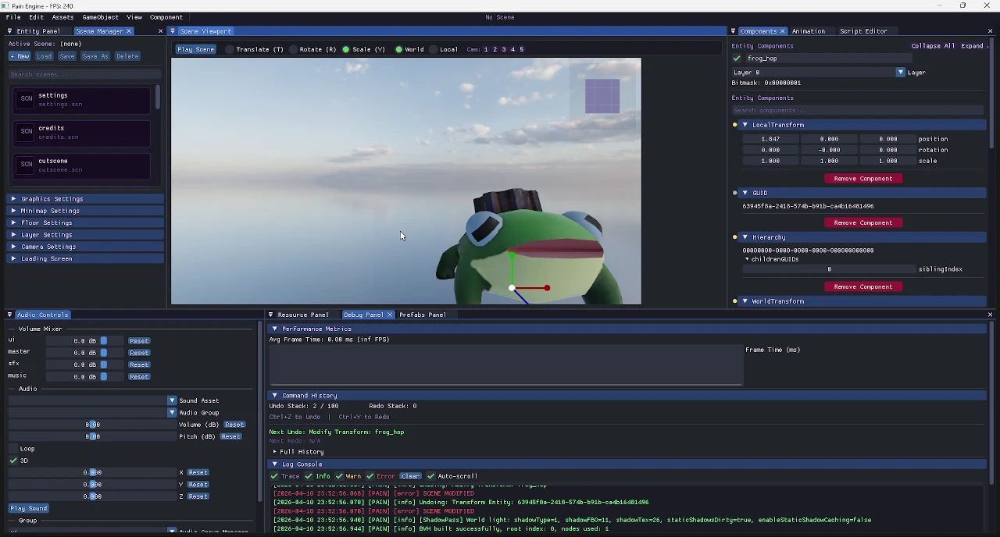
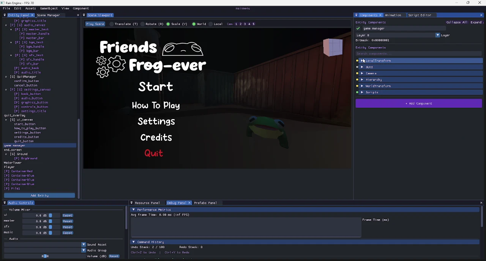
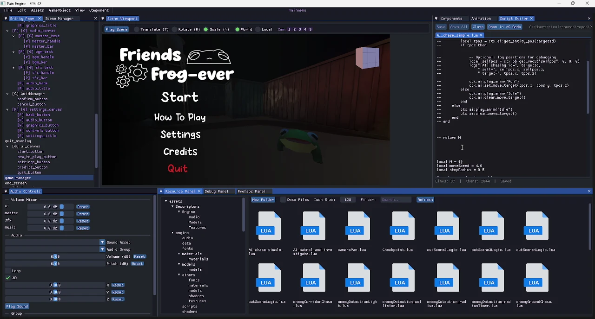
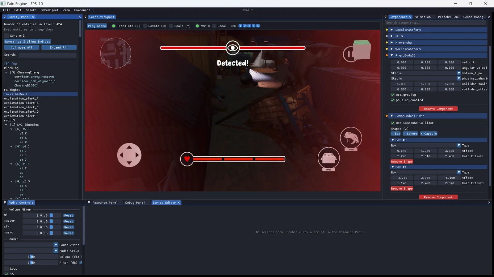
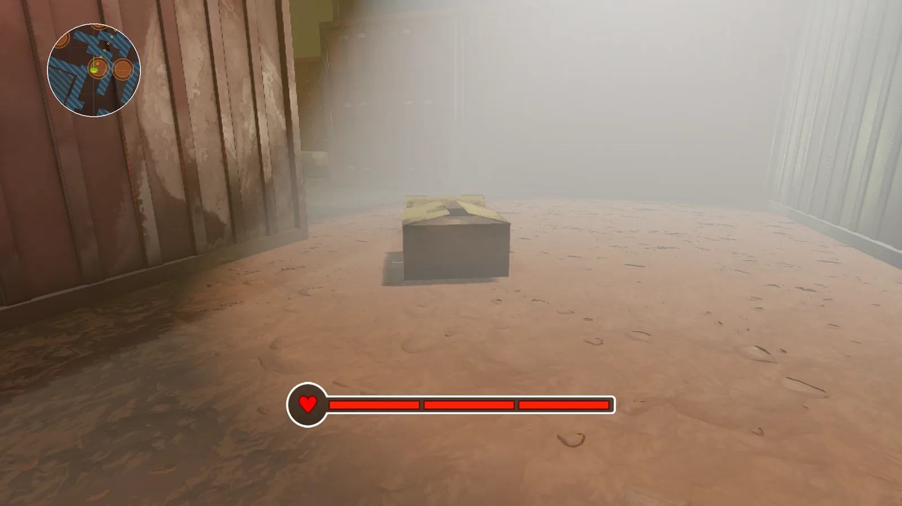
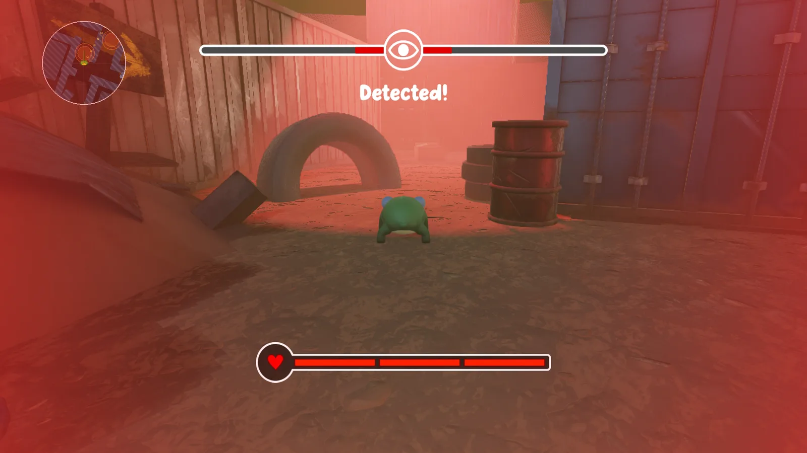
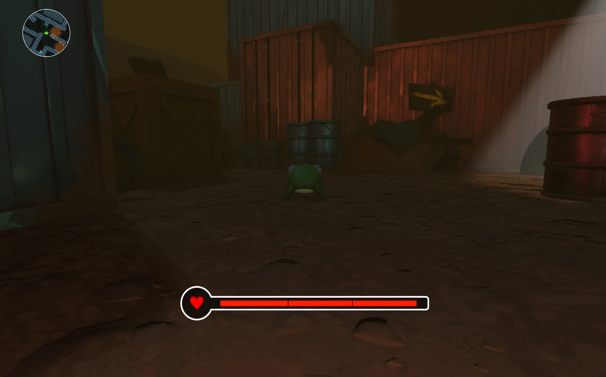
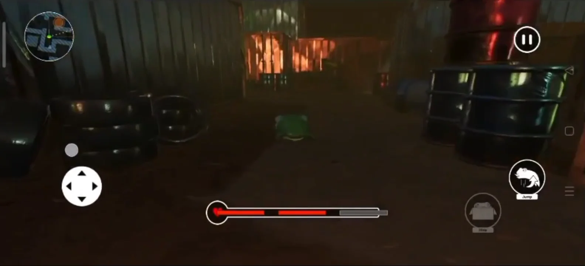
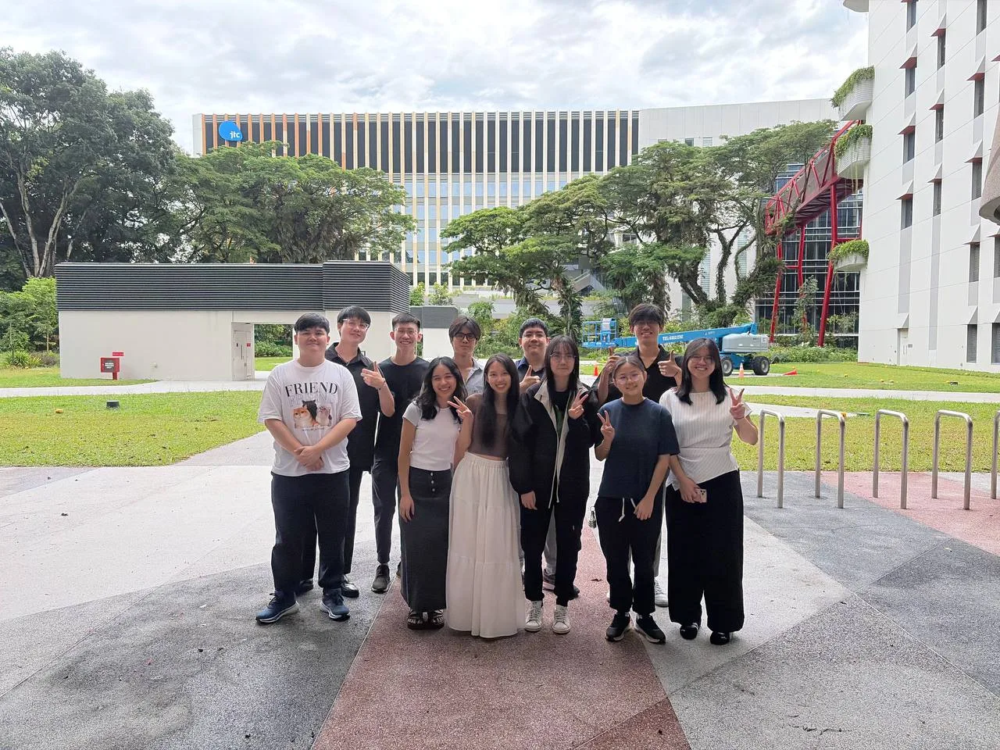

01 · The problem
Two designers, and an engine only programmers could use.
Friends Frog-ever is a 3D stealth game: a frog sneaks through a shipping yard, past robot patrols, to fix its robot friend. It was a school module, and the brief required a multi-platform game on our own C++ engine, not Unity or Unreal.
Without an editor, moving a crate or wiring up a menu button meant a programmer editing code and rebuilding. With two design students building the levels, the programmers would bottleneck everything.
My users were my two teammates, not players. They already built levels in Unity, so the fastest way to make them productive was something that felt like Unity, not a new tool to learn mid-project.
02 · The editor
Everything a designer needs, in one window.
I built the whole editor: every panel, its tools and how they talk to the engine. Designers could build, test and fix a scene without leaving the window.

- Scene viewport: play in place, move, rotate and scale with gizmos, and switch between world/local space and five camera views.
- Hierarchy and inspector: the scene as a tree. Select an object to add components and set its layer, like Unity.
- Resources and prefabs: browse models, textures, audio and scripts, and reuse objects as prefabs.
- Script editor: edit Lua scripts beside the scene, or open them in VS Code.
- Scene manager: create, load and save scenes like the menu, credits and cutscenes.
- Debug panel: frame time, undo/redo history and a filtered log console.
- Audio: a volume mixer for UI, music and effects, with 3D sound.



03 · Trade-offs
The calls I made, and what they cost.
What should the editor look and feel like?
Mirror Unity: same panels, same words (chosen)
The designers already knew where everything was and built from day one. Cost: some Unity ideas didn’t fit our engine, so I bent the engine to match.
Design our own layout around the engine (not chosen)
Could fit the engine more naturally, but the designers would be learning a new tool while also building levels.
Where should designers edit scripts?
Inside the editor, next to the scene (chosen)
Change an enemy’s behaviour and test it in one window. Cost: a second code editor to maintain, so bigger edits open in VS Code.
Only in an external code editor (not chosen)
Less to build, but switching tools slows the try, test, fix loop.
How safe should it be to experiment?
Undo and redo for every edit (chosen)
Designers experimented without fear. Cost: every change runs through one command system, so new tools take longer to add.
Save often and hope (not chosen)
Simpler to build, but one bad drag could cost a designer their afternoon.
04 · The game
What the designers built with it.
The levels, menus and cutscenes were built in the editor. The game shipped on Windows and Android, with touch controls on mobile.





05 · What I learned
Building tools is designing for people.
Familiar beats clever. Copying a layout the designers already knew saved more time than any new idea would have.
Undo makes people brave. When mistakes are cheap, designers try more things, and the levels get better.
Sit with your users. The best requests came from watching the designers work, then turning what slowed them down into the next feature.